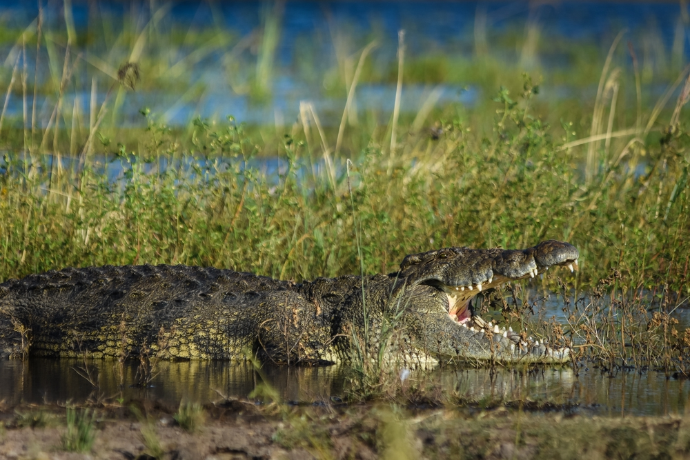
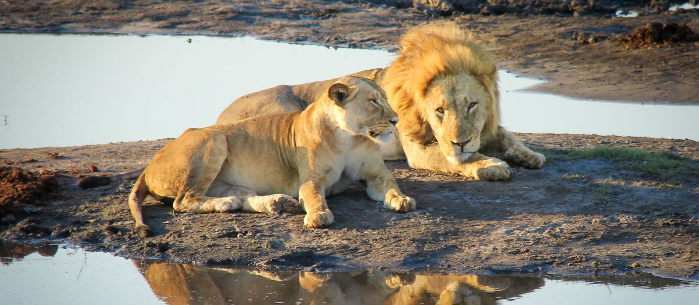
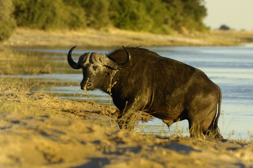
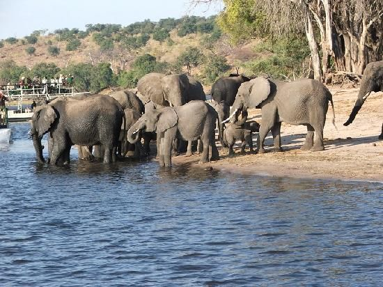

The giraffe (Giraffa) is an African artiodactyl mammal, the tallest living terrestrial animal and the largest ruminant. It is traditionally considered to be one species, Giraffa camelopardalis, with nine subspecies. However, the existence of up to nine extant giraffe species has been described, based upon research into the mitochondrial and nuclear DNA, as well as morphological measurements of Giraffa. Seven other species are extinct, prehistoric species known from fossils.
Crocodiles (subfamily Crocodylinae) or true crocodiles are large semiaquatic reptiles that live throughout the tropics in Africa, Asia, the Americas and Australia. Crocodylinae, all of whose members are considered true crocodiles, is classified as a biological subfamily. A broader sense of the term crocodile, Crocodylidae (which includes Tomistoma), is not used in this article. The term crocodile here applies to only the species within the subfamily of Crocodylinae. The term is sometimes used even more loosely to include all extant members of the order Crocodilia, which includes the alligators and caimans (family Alligatoridae), the gharial and false gharial (family Gavialidae), and all other living and fossil Crocodylomorpha
The lion (Panthera leo) is a large felid of the genus Panthera native mainly to Africa. It has a muscular, deep-chested body, short, rounded head, round ears, and a hairy tuft at the end of its tail. It is sexually dimorphic; adult male lions have a prominent mane. With a typical head-to-body length of 184 to 208 cm (72 to 82 in) they are larger than females at 160 to 184 cm (63 to 72 in). It is a social species, forming groups called prides. A lion pride consists of a few adult males, related females and cubs. Groups of female lions usually hunt together, preying mostly on large ungulates. The lion is an apex and keystone predator; although some lions scavenge when opportunities occur and have been known to hunt humans, the species typically does not.
The African buffalo or Cape buffalo (Syncerus caffer) is a large sub-Saharan African bovine.[2] Syncerus caffer caffer, the Cape buffalo, is the typical subspecies, and the largest one, found in Southern and East Africa. S. c. nanus (the forest buffalo) is the smallest subspecies, common in forest areas of Central and West Africa, while S. c. brachyceros is in West Africa and S. c. aequinoctialis is in the savannas of East Africa. The adult African buffalo's horns are its characteristic feature: they have fused bases, forming a continuous bone shield across the top of the head referred to as a "boss". It is widely regarded as one of the most dangerous animals on the African continent, and according to some estimates[citation needed] it gores, tramples, and kills over 200 people every year. The African buffalo is not an ancestor of domestic cattle and is only distantly related to other larger bovines. Its unpredictable temperament may have been part of the reason that the African buffalo has never been domesticated, unlike its Asian counterpart, the water buffalo. African buffaloes have few non-human predators aside from lions and large crocodiles. As a member of the big five game, the Cape buffalo is a sought-after trophy in hunting.
Elephants are the largest existing land animals. Three species are currently recognised: the African bush elephant, the African forest elephant, and the Asian elephant. Elephantidae is the only surviving family of the order Proboscidea; extinct members include the mastodons. The family Elephantidae also contains several extinct groups, including the mammoths and straight-tusked elephants. African elephants have larger ears and concave backs, whereas Asian elephants have smaller ears, and convex or level backs. Distinctive features of all elephants include a long proboscis called a trunk, tusks, large ear flaps, massive legs, and tough but sensitive skin. The trunk is used for breathing, bringing food and water to the mouth, and grasping objects. Tusks, which are derived from the incisor teeth, serve both as weapons and as tools for moving objects and digging. The large ear flaps assist in maintaining a constant body temperature as well as in communication. The pillar-like legs carry their great weight
ELEPHANT VALLEY LODGEWe are situated in the Lesoma Valley (corridor between Chobe National Park and Wangi National Park). All year round waterhole in front of lodge that has daily visitations of all game including BIG 4. We are far enough away from villages and towns to enjoy the natural sounds of the bush (lions roaring, hyenas calling and elephants trumpeting). We have 24 hour electrical power, with fans and electric blankets (winter only) plus the whole property is secured by a perimeter electrical fence to keep out dangerous animals. We are 30 minutes from an International Airport (Kasane)and 30 minutes from a Medical Center.
RIVER VIEW LODGEAt River View Lodge the health and safety of our guests and staff has always been our utmost priority, and this is even more poignant as together we combat the COVID-19 pandemic.
Face masks required for guests in public areas
Face masks required for staff in public areas
Hand sanitizer available to guests & staff
Paid stay-at-home policy for staff with symptoms
Regularly sanitized high-traffic areas
Staff required to regularly wash hands
Regular temperature checks for staff
Individually wrapped toiletries
COMFORT PALACE GUESTHOUSEFree fast WiFi, installed Dstv, parking area, garden,boutique and activities like game drives,boat cruise and trips to Victoria falls.
CHOBE BUSH LODGEChobe Bush Lodge is the newly opened sister lodge to Chobe Safari Lodge. Located next door to Chobe Safari Lodge, Chobe Bush Lodge offers modern, spacious rooms in a tranquil setting. The lodge borders on the Chobe National Park. The entrance gate to Chobe National Park is a short 5-minute drive away, and the boat cruises enter the park directly from the lodge.
The lodge is located a distance away from the Chobe River banks, but most rooms do have a view of the river.
Chobe Bush Lodge shares facilities with Chobe Safari Lodge next door. Guests can use the restaurants and bars at both lodges. Activities on offer include boat cruises, game drives, fishing, traditional village tours and day tours to the Victoria Falls.
Chobe Bush Lodge offers guests a bar and pool area, buffet breakfast and a la carte menu for lunch and dinner. Guests can also enjoy buffet meals.
CHOBE SAFARI LODGEChobe Safari Lodge borders on the Chobe National Park. The lodge is in Kasane, on the Chobe River, and all rooms have beautiful views of the river. The park entrance gate is a short 10-minute drive from the lodge.
The restaurant serves a la carte as well as buffet-style meals. The cocktail bar and pool areas are most welcoming. The lodge offers excellent value for money accommodation. You have options and can choose from camping to budget to luxury accommodation.
The setting makes the lodge special, as it overlooks both the beautiful river and the Chobe floodplains.
The location of lodge is perfect for any safari traveler or visitor in Botswana. It’s a great place to do game drives and boat trips. Chobe Safari Lodge is a the most sought-after lodge because of its price, location, and value for money. We recommend that you make your reservations well in advance.
The campsite at the lodge offers some of the best sunset views in Kasane. The camp also overlooks the Chobe River. The Chobe Safari Lodge Campsite comes highly recommended by our team.